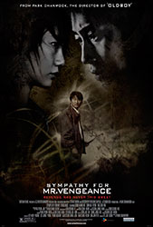
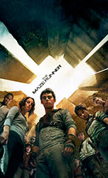
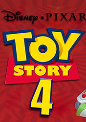
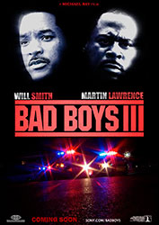
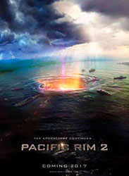

Самые ожидаемые фильмы
2018 года
Сейчас нам уже хорошо известно, какие картины выйдут в скором времени. Здесь вы узнаете о том, как обстоят дела в кинематографе к этому моменту. Итак, сеанс начался.
Сочувствие господину Месть / Sympathy for Mr. Vengeance
Премьера: 2018 год (с возможным переносом на более поздний срок).
Жанр: триллер, драма
Режиссер: TBA
Актерский состав: TBA
Поэма о мести. Такой был слоган у оригинального фильма. Американский ремейк пока не обзавелся подобного рода фразой, привлекающий в залы кинотеатров зрителей. У него к этому времени нет ни синопсиса, ни данных об актерском составе, о режиссере. Объявлена только дата релиза — 2018 год. Что же, «Олдбой» был, если честно, не очень. Естественно, американская его версия. Посмотрим, как в Штатах обойдутся с «Господином». Пак Чхан-ук же снял в свое время замечательное кино, пришедшееся по вкусу самому Квентину Тарантино.
Бегущий в лабиринте: Лекарство от смерти / The Maze Runner: The Death Cure
Премьера: 8 февраля (сейчас и далее по тексту указанная дата актуальна для России)
Жанр: фантастика, боевик, триллер
Режиссер: Уэс Болл
Актерский состав: Кая Скоделарио, Дилан О’Брайен, Кэтрин МакНамара, Натали Эммануэль, Томас Сэнгстер, Джанкарло Эспозито, Роза Салазар, Барри Пеппер, Ли Ки Хон, Джейкоб Лофленд и др.
Это уже третья часть в сложившейся франшизе. Первые две снимал Уэс Болл, поэтому и за их продолжение взялся он же. Актеры для участия в проекте собраны, сценаристы найдены, имена оператора, композитора, монтажера и прочих людей, привлеченных к съемочной группе, также были обнародованы. Единственное, что было упущено продюсерами к этому моменту — информирование о статусе производства. Он, к сожалению, еще не был объявлен. Даже синопсис есть, из которого следует, что Томас находится в поисках «Вспышки», лекарства от смертельной болезни.
История игрушек 4 / Toy Story 4
Премьера: перенесена на лето 2019 года
Жанр: мультфильм, фэнтези, комедия, приключения, семейный
Режиссер: Джон Лассетер, Джош Кули
Актерский состав: Том Хэнкс, Джоан Кьюсак, Тим Аллен, Энни Поттс, Патриция Аркетт, Бонни Хант, Лори Меткаф, Джоди Бенсон, Дон Риклз, Джефф Гарлин и др.
Слухи о продолжении, казалось, законченной трилогии, повествующей о приключениях игрушек в мире людей, ходят давно. Сейчас достоверно известно, что они более чем оправданы. Даже сам Джон Лассетер решился сесть в кресло режиссера-постановщика. На сегодняшний день объявлено, что проект пребывает на стадии подготовки к съемкам. И да, пускай это мультфильм, но все-таки — ФИЛЬМ. Поэтому давайте обойдемся без подобного рода вопросов в будущем. Специально уточнили для того, чтобы избежать их. Если по делу, то нам известно, что Том Хэнкс вернется к своему персонажу, а композитор Рэнди Ньюман займется написанием музыки к сиквелу. Релиз намечен на лето 2019 года. Мультфильм будет демонстрироваться в формате 3D. Ждем?
Плохие парни 3 / Bad Boys for Life
Премьера: 8 ноября (с возможным переносом на более поздний срок)
Жанр: боевик, триллер, комедия
Режиссер: Джо Карнахан
Актерский состав: Уилл Смит, Мартин Лоуренс, Деррик Гилберт и др.
Что сказать об этом кино? Да, список фильмов 2018 года вместе с его непосредственным участием явно выигрывает, здесь спорить не стоит. Да простое возвращение старой-доброй экранной пары детективов Смит-Лоуренс — это СОБЫТИЕ. Майкл Бэй, когда-то давно явивший миру комедийный экшн о простых полицейских, пускай семьянине и холостяке, что не меняет дело, кажется, вовсю погрузился в «Трансформеров», поэтому режиссировать новые приключения Майка Лоури и Маркуса Бернетта будет Джо Карнахан, на счету которого, например, культовые «Козырные тузы». Продюсировать третью часть вновь принялся Джерри Брукхаймер, последние масштабные проекты которого, если говорить начистоту, оказались провальными. Ну, пожелаем же успехов «Плохим парням». Хоть в чем-то он должен преуспеть!
Тихоокеанский рубеж 2 / Pacific Rim: Maelstrom
Премьера: 22 марта
Жанр: фантастика, боевик
Режиссер: Стивен С. ДеНайт
Актерский состав: Скотт Иствуд, Рон Перлман, Цзин Тянь, Макс Мартини, Джон Бойега, Адриа Архона, Леви Миден, Кэйли Спени и др.
Пока шла разработка сиквела «Тихоокеанского рубежа», Гильермо дель Торо успел снять «Багровый пик». Обязанности же режиссера на съемках продолжения «Пасифик Рим» будет выполнять Стивен С. ДеНайт, до этого работавший на телевидении в качестве сценариста и временами исполняя роль директора на съемочной площадке. Съемки второго «Рубежа» вот-вот начнутся. По слухам, Рон Перлман вернется к своей роли. Компанию ему по сюжету составят Скотт Иствуд и Джон Бойега. Ну и другие. И все же, мистер дель Торо, когда вы планируете порадовать нас третьим фильмом о «Хеллбое»? Гигантские роботы — это хорошо, но ведь чувак с обрезанными рогами — это куда круче, не так ли, дорогие читатели?